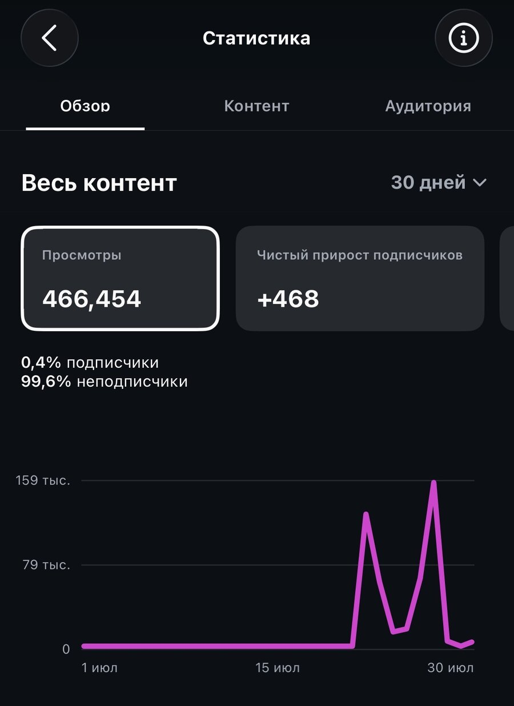
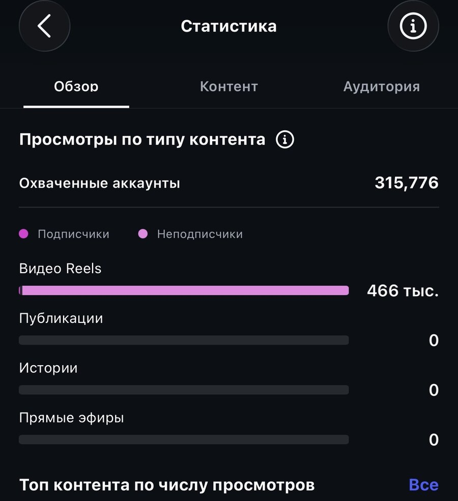
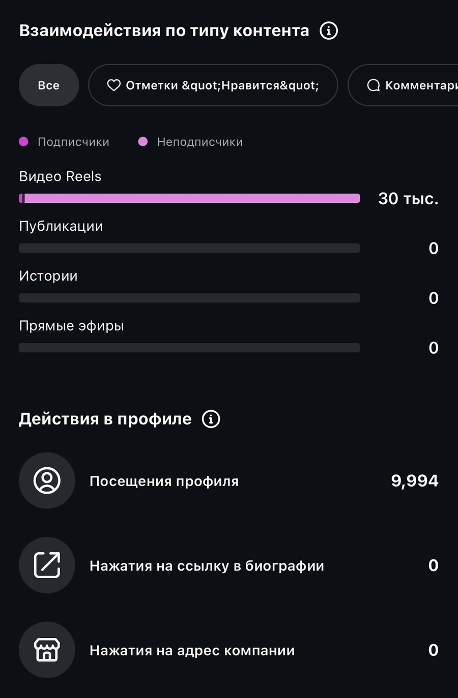
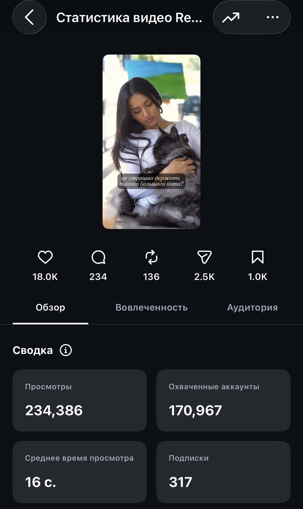
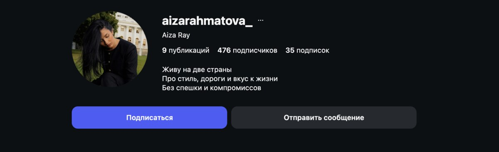

Аккаунт запущен с нуля 21 июля 2026 года. Все показатели набраны за десять дней публикаций — полностью органически, без рекламы и продвижения.
Данные Instagram за последние тридцать дней. Восемь опубликованных роликов.
Почти весь охват пришёл к людям, которые аккаунт ещё не знали. Блог набирал аудиторию с холодного трафика, а не показывался одним и тем же подписчикам.
Сравнение с показателями прежнего аккаунта, зафиксированными на входе в работу.
| Показатель | Было | Стало | Рост |
|---|---|---|---|
| Лучший ролик | 5 000 | 234 386 | ×47 |
| Средний ролик | 1 500 | 34 013 | ×22 |
| Реакции на ролик | ~51 | ~2 370 | ×46 |
| Подписчики | 136 | 476 | ×3,5 |
| Ритм публикаций | Рывками | Ежедневно | — |
Суммарно по восьми роликам за месяц.
Роликами делились: их отправили в личные сообщения почти три тысячи раз. Пересылки и сохранения — главный сигнал алгоритму, что контент стоит показывать дальше.
Один ролик принёс две трети месячного охвата и две трети всех новых подписчиков.
Скриншоты из аккаунта, без обработки.





Две версии: структурный портрет и дословная расшифровка. Более ста вопросов, ответы голосовыми.
Позиционирование, банк из 101 темы, 26 текстов под разговорные ролики.
Обзорный, дом, город, Петербург — с локациями, образами и раскадровкой.
Город, дом и съёмка с оператором. Из них собран весь контент месяца.
Семь созвонов, 1109 сообщений и 364 голосовых в рабочем чате.
Тексты и сборка роликов из архива поездок — без новых съёмок.
Полная раскладка с разбором каждого ролика — в отчёте за июль.
Продюсирую блоги медийных личностей и экспертов: от распаковки и позиционирования до съёмок и ежедневного ведения.
Написать в Telegram Кейс на 153 000